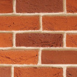
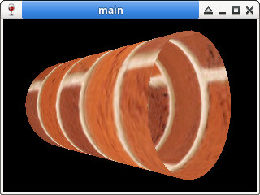

Steward
分享是一種喜悅、更是一種幸福
程式語言 - ObjAsm - OpenGL 1.0 - Draw Cylinder
參考資訊：
https://github.com/ObjAsm
https://objasm.x10host.com/index.htm
https://github.com/gamedev-net/nehe-opengl
main.S
%include @Environ(OBJASM_PATH)/Code/Macros/Model.inc
SysSetup OOP, WIN32_OPENGL, ANSI_STRING
MakeObjects Primer
Object MyApp, , Primer
RedefineMethod Init
StaticMethod Run
StaticMethod WndProc, UINT, WPARAM, LPARAM
DefineVariable tex, GLuint, 0
DefineVariable hDC, HDC, 0
DefineVariable hRC, HGLRC, 0
DefineVariable hWnd, HWND, 0
DefineVariable pDefWndProc, DWORD, 0
DefineVariable hGLU, HMODULE, 0
DefineVariable pgluNewQuadric, DWORD, 0
DefineVariable pgluDeleteQuadric, DWORD, 0
DefineVariable pgluQuadricDrawStyle, DWORD, 0
DefineVariable pgluQuadricNormals, DWORD, 0
DefineVariable pgluQuadricTexture, DWORD, 0
DefineVariable pgluSphere, DWORD, 0
DefineVariable pgluCylinder, DWORD, 0
ObjectEnd
Method MyApp.Init, uses esi
local w:DWORD
local h:DWORD
local fmt:DWORD
local pfd:PIXELFORMATDESCRIPTOR
local top:REAL8
local right:REAL8
local mtop:REAL8
local mright:REAL8
local bm:BITMAP
local bmi:BITMAPINFO
local bmp:HBITMAP
local len:DWORD
local pixels:DWORD
local rc:RECT
local quadric:DWORD
SetObject esi
mov w, 320
mov h, 240
invoke CreateWindowEx, WS_EX_LEFT, WC_DIALOG, $OfsCStr("main"), WS_OVERLAPPEDWINDOW or WS_VISIBLE, 0, 0, w, h, NULL, NULL, NULL, pSelf
mov [esi].hWnd, eax
invoke SetWindowLong, [esi].hWnd, GWL_WNDPROC, $MethodAddr(MyApp.WndProc)
mov [esi].pDefWndProc, eax
lea edi, pfd
mov ecx, sizeof PIXELFORMATDESCRIPTOR
xor eax, eax
rep stosb
mov pfd.nSize, sizeof PIXELFORMATDESCRIPTOR
mov pfd.nVersion, 1
mov pfd.dwFlags, PFD_DRAW_TO_WINDOW or PFD_SUPPORT_OPENGL or PFD_DOUBLEBUFFER
mov pfd.iPixelType, PFD_TYPE_RGBA
mov pfd.cColorBits, 16
mov pfd.cDepthBits, 16
mov pfd.dwLayerMask, PFD_MAIN_PLANE
invoke GetDC, [esi].hWnd
mov [esi].hDC, eax
invoke ChoosePixelFormat, [esi].hDC, addr pfd
mov fmt, eax
invoke SetPixelFormat, [esi].hDC, fmt, addr pfd
invoke wglCreateContext, [esi].hDC
mov [esi].hRC, eax
invoke wglMakeCurrent, [esi].hDC, [esi].hRC
invoke LoadLibrary, $OfsCStr("glu32.dll")
mov [esi].hGLU, eax
invoke GetProcAddress, [esi].hGLU, $OfsCStr("gluNewQuadric")
mov [esi].pgluNewQuadric, eax
invoke GetProcAddress, [esi].hGLU, $OfsCStr("gluDeleteQuadric")
mov [esi].pgluDeleteQuadric, eax
invoke GetProcAddress, [esi].hGLU, $OfsCStr("gluQuadricDrawStyle")
mov [esi].pgluQuadricDrawStyle, eax
invoke GetProcAddress, [esi].hGLU, $OfsCStr("gluQuadricNormals")
mov [esi].pgluQuadricNormals, eax
invoke GetProcAddress, [esi].hGLU, $OfsCStr("gluQuadricTexture")
mov [esi].pgluQuadricTexture, eax
invoke GetProcAddress, [esi].hGLU, $OfsCStr("gluSphere")
mov [esi].pgluSphere, eax
invoke GetProcAddress, [esi].hGLU, $OfsCStr("gluCylinder")
mov [esi].pgluCylinder, eax
invoke LoadImageA, NULL, $OfsCStr("main.bmp"), IMAGE_BITMAP, 0, 0, LR_LOADFROMFILE
mov bmp, eax
invoke GetObject, bmp, sizeof BITMAP, addr bm
mov bmi.bmiHeader.biSize, sizeof BITMAPINFOHEADER
push bm.bmWidth
pop bmi.bmiHeader.biWidth
mov eax, -1
mul bm.bmHeight
mov bmi.bmiHeader.biHeight, eax
mov bmi.bmiHeader.biPlanes, 1
mov bmi.bmiHeader.biBitCount, 24
mov bmi.bmiHeader.biCompression, BI_RGB
mov eax, 3
mul bm.bmWidth
mul bm.bmHeight
mov len, eax
invoke GetProcessHeap
invoke HeapAlloc, eax, 0, len
mov pixels, eax
invoke GetDIBits, [esi].hDC, bmp, 0, bm.bmHeight, pixels, addr bmi, DIB_RGB_COLORS
invoke glGenTextures, 1, addr [esi].tex
invoke glBindTexture, GL_TEXTURE_2D, [esi].tex
invoke glEnable, GL_TEXTURE_2D
invoke glTexImage2D, GL_TEXTURE_2D, 0, GL_RGB, bm.bmWidth, bm.bmHeight, 0, GL_BGR, GL_UNSIGNED_BYTE, pixels
invoke glTexParameteri, GL_TEXTURE_2D, GL_TEXTURE_MIN_FILTER, GL_LINEAR
invoke glTexParameteri, GL_TEXTURE_2D, GL_TEXTURE_MAG_FILTER, GL_LINEAR
invoke GetProcessHeap
invoke HeapFree, eax, 0, pixels
invoke DeleteObject, bmp
fld f4(45.0)
fldpi
fmulp st(1), st(0)
mov eax, 360
push eax
fild DWORD ptr [esp]
add esp, 4
fdivp st(1), st(0)
fptan
fstp st(0)
fmul f4(0.1)
fstp top
fld top
push w
fild DWORD ptr [esp]
add esp, 4
push h
fild DWORD ptr [esp]
add esp, 4
fdivp st(1), st(0)
fmulp st(1), st(0)
fstp right
fld top
fchs
fstp mtop
fld right
fchs
fstp mright
lea edi, rc
mov ecx, sizeof RECT
xor eax, eax
rep stosb
invoke GetClientRect, [esi].hWnd, addr rc
mov eax, rc.right
sub eax, rc.left
mov ecx, rc.bottom
sub ecx, rc.top
invoke glViewport, 0, 0, eax, ecx
invoke glMatrixMode, GL_PROJECTION
invoke glFrustum, \
DWORD ptr [mright + 0], \
DWORD ptr [mright + 4], \
DWORD ptr [right + 0], \
DWORD ptr [right + 4], \
DWORD ptr [mtop + 0], \
DWORD ptr [mtop + 4], \
DWORD ptr [top + 0], \
DWORD ptr [top + 4], \
DWORD ptr [f8(0.1) + 0], \
DWORD ptr [f8(0.1) + 4], \
DWORD ptr [f8(100.0) + 0], \
DWORD ptr [f8(100.0) + 4]
invoke glMatrixMode, GL_MODELVIEW
invoke glLoadIdentity
MethodEnd
Method MyApp.Run, uses esi
local msg:MSG
local quadric:DWORD
assume esi:ptr $Obj(MyApp)
mov esi, offset $ObjTmpl(MyApp)
@@:
invoke GetMessage, addr msg, NULL, 0, 0
cmp eax, 0
je @f
invoke DispatchMessage, addr msg
call DWORD PTR [[esi].pgluNewQuadric]
mov quadric, eax
push GLU_SMOOTH
push quadric
call DWORD PTR [[esi].pgluQuadricNormals]
push GL_TRUE
push quadric
call DWORD PTR [[esi].pgluQuadricTexture]
invoke glLoadIdentity
invoke glTranslatef, f4(-1.25), f4(0.0), f4(-5.0)
invoke glRotatef, f4(45.0), f4(0.0), f4(1.0), f4(0.0)
invoke glBindTexture, GL_TEXTURE_2D, [esi].tex
push 32
push 32
push DWORD PTR [f8(3.0)+4]
push DWORD PTR [f8(3.0)+0]
push DWORD PTR [f8(1.0)+4]
push DWORD PTR [f8(1.0)+0]
push DWORD PTR [f8(1.0)+4]
push DWORD PTR [f8(1.0)+0]
push quadric
call DWORD PTR [[esi].pgluCylinder]
push quadric
call DWORD PTR [[esi].pgluDeleteQuadric]
invoke SwapBuffers, [esi].hDC
jmp @b
@@:
invoke wglMakeCurrent, NULL, NULL
invoke wglDeleteContext, [esi].hRC
invoke ReleaseDC, [esi].hWnd, [esi].hDC
invoke glDeleteTextures, 1, addr [esi].tex
invoke FreeLibrary, [esi].hGLU
mov eax, msg.wParam
MethodEnd
Method MyApp.WndProc, uses esi, uMsg:UINT, wParam:WPARAM, lParam:LPARAM
assume esi:ptr $Obj(MyApp)
mov esi, offset $ObjTmpl(MyApp)
.if uMsg == WM_CLOSE
invoke DestroyWindow, [esi].hWnd
.elseif uMsg == WM_DESTROY
invoke PostQuitMessage, 0
.else
invoke CallWindowProc, [esi].pDefWndProc, [esi].hWnd, uMsg, wParam, lParam
.endif
MethodEnd
start proc
SysInit
OCall $ObjTmpl(MyApp)::MyApp.Init
OCall $ObjTmpl(MyApp)::MyApp.Run
OCall $ObjTmpl(MyApp)::MyApp.Done
SysDone
xor eax, eax
ret
start endp
end
完成

